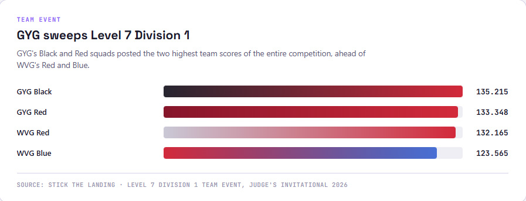
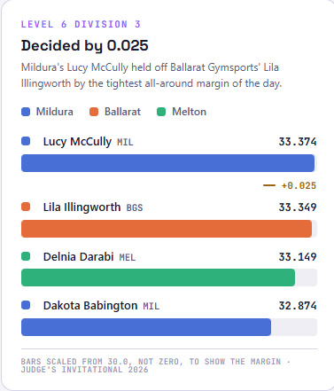
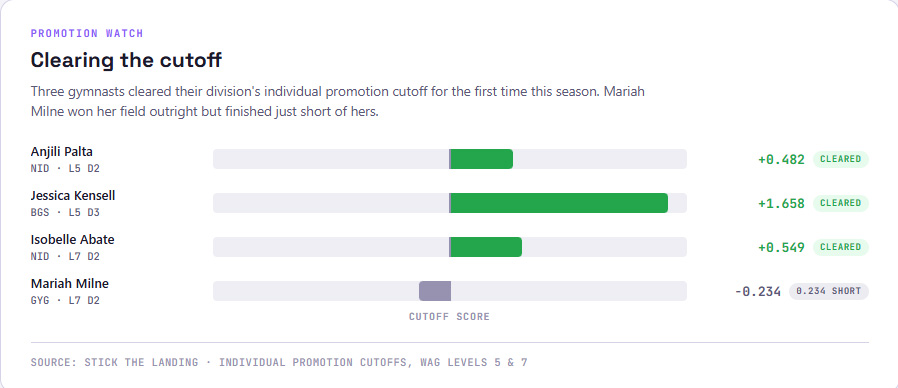
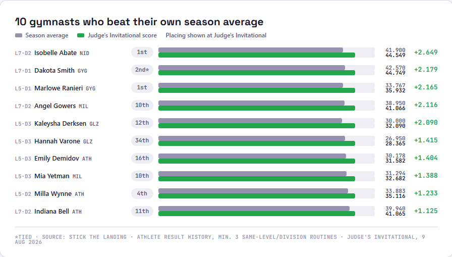

GEELONG'S BIG DAY IN LEVEL 7 DIVISION 1
Geelong YMCA Gym Club's Macy Bix posted 47.333 in the Level 7 Division 1 Under field, the younger of the division's two age brackets, vault 11.65, bars 12.033, beam 12.1, floor 11.55, the highest individual all-around score of the entire competition, well clear of Waverley Gymnastics Centre's Claire Hsu on 45.733.

Geelong's Level 7 Division 1 squads backed Bix up in the team event: Geelong Black won on 135.215 and Geelong Red was runner-up on 133.348, the two highest team scores of the entire competition, ahead of Waverley's Red (132.165) and Blue (123.565) squads.
In the division's older bracket, Pulse Gymnastics' Scarlett Alessi won outright on 46.05, but Geelong had the next two places locked up in the tightest possible fashion: Scarlett Condro and Dakota Smith tied for 2nd, both on exactly 44.749.
LUCY MCCULLY WINS LEVEL 6 DIVISION 3 BY 0.025

Mildura Gymnastics Centre's Lucy McCully won Level 6 Division 3 on 33.374, edging Ballarat Gymsports' Lila Illingworth by just 0.025, the tightest margin of the entire competition. Melton Gymnastics Academy's Delnia Darabi was 3rd on 33.149, with McCully's own clubmate Dakota Babington 4th on 32.874.
Mildura's Hattie O'Grady finished only 9th overall but took gold on vault with a 9.066. Mildura's own Blue squad won the division's team event on 98.364, comfortably clear of Ballarat's 97.281.
PROMOTION WATCH

Three gymnasts cleared their division's promotion cutoff at the Judge's Invitational, all for the first time this season. Niddrie Gymnastic Club's Anjili Palta won her Level 5 Division 2 field on 36.482, over that division's 36.0 cutoff. Ballarat's Jessica Kensell did the same in Level 5 Division 3, winning on 35.658 against a 34.0 cutoff. And Niddrie's Isobelle Abate won Level 7 Division 2 on 44.549, just over that field's 44.0 mark.
The closest miss of the weekend also belonged to a division winner: Geelong's Mariah Milne won the other Level 7 Division 2 field outright but finished 0.234 short of the same 44.0 cutoff, on 43.766.
| Athlete | Club | Level / Div | Score | Cutoff | Status |
|---|---|---|---|---|---|
| Anjili Palta | NID | L5 D2 | 36.482 | 36.0 | Over cutoff, 1st time this season |
| Jessica Kensell | BGS | L5 D3 | 35.658 | 34.0 | Over cutoff, 1st time this season |
| Isobelle Abate | NID | L7 D2 | 44.549 | 44.0 | Over cutoff, 1st time this season |
| Mariah Milne | GYG | L7 D2 | 43.766 | 44.0 | 0.234 short, won the division |
AROUND THE FLOOR
Diamond Gymnastics Club had the rest of Level 7 Division 2 to itself behind Milne: Felicity Kinna-Tillbrook was 2nd (43.032), Bonnie Elliott 3rd (42.632), Ruby Tossavainen 5th (42.398) and Audrey Nero 6th (42.265), four of the top six all-around places. Diamond's team backed that up, winning the division's other team event outright on 129.862.
Knox Gym Club's Bridie Williamson finished 11th overall in a 30-strong Level 5 Division 2 field but took gold on beam, 9.125. Clubmates Gracie Harrop and MacKenzie Johnson each tied for 3rd on the same apparatus. Posting the results on Facebook, Knox called it "another great experience for the girls, with plenty of valuable feedback to take into the rest of the competition season," thanking Coach Zoe for the girls' "hard work, perseverance and commitment." Knox's Blue and Red squads finished 4th (99.264) and 6th (97.171) in the team event.
Essendon Keilor Gym Academy had a solid weekend across three levels. In Level 6 Division 2, Sophie Mlakar finished 14th overall but took 4th on vault and 3rd on beam. In Level 7 Division 2, Harriet Gluschenko missed the podium by just 0.1, with 2nd on vault and 3rd on floor along the way, and clubmate Sara Stamatova was 3rd on vault in the same field. Sophie Gamble, also in Level 7 Division 2, improved by almost five points on her score from two weeks earlier at the Jets July Invitational, 34.65 up to 39.4.
The tightest podium miss of the day belonged to Niddrie's Reina McMahon, who finished 4th in Level 6 Division 2 by just 0.016, 35.133 to Pulse's Liara Kay on 35.149.
BEATING YOUR OWN AVERAGE

A results table only shows where a gymnast finished against the field, not against herself. Comparing each gymnast's Judge's Invitational score to their own average from at least three previous results at the same level and division, twenty-three athletes beat their own season average. A few examples, several of them well down the field: Mildura's Angel Gowers finished 10th in Level 7 Division 2 but was up 2.116 on her own average, and in Level 5 Division 3, Glitz Gymnastics Academy's Kaleysha Derksen (12th) and Hannah Varone (34th) improved by 2.09 and 1.415 respectively. Athleta Gymnastics' Milla Wynne (4th, Level 5 Division 2) and Indiana Bell (11th, Level 7 Division 2) both climbed too.
Full results from the 2026 Judge's Invitational, all twenty-two events across Levels 5 to 7, are up on the results page.